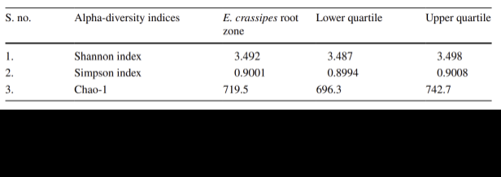
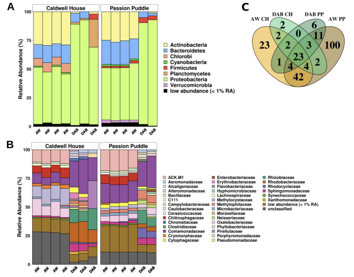

Full research report · Nazareth University
Phytoremediation of North American Harmful Algal Blooms Under Long-Term Feasibility Constraints
A feasibility-centered review comparing water hyacinth, star duckweed, and parrot’s feather for bloom suppression and cyanotoxin removal.

Abstract
Harmful algal blooms (HABs) are an environmental phenomenon increasing in prevalence, which ultimately poses an incredibly urgent environmental and public health concern. Exacerbated by eutrophication and anthropogenic climate change, these trends are only expected to worsen. Conventional HAB treatment methods, such as chemical algaecides and mechanical removal, may reduce bloom biomass in short-term scenarios, they are often labor-intensive or carry ecological risks. This literature review assesses phytoremediation using 3 macrophytes (Eichhornia crassipes, Lemna trisulca, and Myriophyllum aquaticum) as an alternative for HAB and cyanotoxin management. Qualitative assessments evaluated the tendency to exhibit adverse effects for all respective macrophytes, and the literature was systematically reviewed to determine raw remediative efficiencies. E. crassipes demonstrates strong nutrient uptake and remediation potential; however, rapid proliferation leading to mat formation and regional restrictions limit application.
M. aquaticum is a promising allelopathic agent capable of removing microcystins from the natural environment, but similarly to E. crassipes, its invasive behavior and fragmentation risk make it an unideal candidate. L. trisulca appears to maintain the strongest raw remediative potential and long-term feasibility due to its lower adverse-effect tendency, lack of restriction, and demonstrable ability for toxin removal and degradation.
Introduction
Harmful algal blooms (HABs) are an increasingly prevalent environmental phenomenon characterized by a proliferation of photoautotrophs, consisting of cyanobacteria, diatoms, and/or dinoflagellates. HABs, thriving most efficiently within slow or non-moving, warmer, nutrient-laden bodies of water, have been reported throughout the world and in every U.S. state (NOAA, n.d.; Pick, 2016), and climate change is only continuing to exacerbate incidence as conditions become more favorable (EPA, 2026). Eutrophication, characterized by an overabundance of nutrients like nitrogen and phosphorus (N/P) within the water column, is one of the foremost causes of HAB events and will generally occur as a result of agricultural runoff (Daniel et al. 1998). Furthermore, HABs have been shown in the literature to induce hypoxia, or a partial lack of oxygen within the water column. Primarily occurring following bloom events when algal cells die, sink, and are decomposed, this process, by extension, removes dissolved O2 (DO) from the water (ASCE, 2024).
According to the EPA’s Dissolved Oxygen "Indicators" Information Sheet, DO levels ranging from 1-3 mg/L are too low to support the majority of aquatic life, whereas levels below 5 mg/L are considered metabolically stressful. HABs are known to produce bioactive metabolites referred to as cyanotoxins, capable of impacting the nervous, endocrine, and reproductive systems, among others (Cameán et al. 2017; Metcalf et al. 2021). These toxins impact recreational, economic, and environmental industries (Tokodi & Backović, 2024). In 2018, Florida's red tides (a type of HAB caused by Karenia brevis) caused an estimated $2.7 billion in economic losses, primarily due to decreased revenues in various coastline businesses, such as hotels, restaurants, and bars (Alvarez et al. 2024). Annually, HAB events are estimated to cost between 10-100 million dollars in the United States alone, with some singular events averaging at tens of millions of dollars (NOAA, 2025).
Cyanotoxin exposure is a major contributing factor for adverse health effects in both humans and animals. Paralytic shellfish poisoning (PSP), for example, occurs in humans when exposed to saxitoxins (STX), a neurotoxic metabolite produced by cyanotoxins, by way of eating contaminated shellfish. Outbreak events have been found to coincide with major bloom proliferations such as in Washington and Oregon in 2024, with over 40 confirmed cases of PSP, some requiring hospitalization (NCCOS, 2025). PSP can cause paralysis, respiratory failure, and ultimately, death, with symptoms such as numbness beginning in as little as 30 minutes (Jong, 2008). Domoic acid is a toxin known, additionally, for inducing amnesic shellfish poisoning (Zabaglo et al. 2016) In the past century alone, reports of cyanotoxin poisonings involving both animals and humans have increased ten-fold (Wood, 2016). With anthropogenic climate change actively increasing HAB incidence (EPA, 2026), this trend is only expected to worsen.
Animals, such as livestock and pets, are especially vulnerable to HAB events as death can occur in as little as minutes to hours following exposure to produced cyanotoxins (Wolfe, 2021). When cyanobacterial cells die, whether as a result of self-induced hypoxia or natural bloom decay, cell lysis may occur. Cyanotoxins, which are contained intracellularly, will then be released into the surrounding medium, where they can have detrimental effects on the environment (EPA, 2021). Facciponte et al. (2019) suggested that these toxins can then become aerosolized and may accumulate in the human upper respiratory tract and central airway, finding no evidence that distance from the nearest waterbody or time of year influenced exposure, which was interpreted as being indicative of a larger, more chronic issue.
Metcalf et al. (2021) also found that various toxins (MCs, BMAA, ANTX-a) have been previously recovered from filler materials used in environmental/personal air sampling equipment, suggesting that airborne toxins may be present in human-occupied areas. If cyanotoxins are inhaled by humans, this may result in a rapid uptake into the central nervous system as they can bypass the blood-brain barrier via the olfactory nerve (Lucchini et al. 2012). Microcystins (MCs) are hepatotoxic cyanotoxins and potent liver tumor promoters, of which there are over 300 recognized congeners (Spoof & Catherine, 2016; Gu et al. 2022). β-Methylamino-L-alanine (BMAA) is a neurotoxin associated with extremely increased incidences of ALS/Parkinsonism-Dementia Complex in Guam (Plato et al. 2022). Anatoxin-A (ANTX-a) is also called Very Fast Death Factor (VFDF), which is a name given by Carmichael & Gorham (1978) following observation of cell death in mice in as little as 2-7 minutes post-intraperitoneal injection.
Although there are many more cyanotoxins and thousands of possible congeners, the referenced toxins (BMAA, MCs, ANTX-a) are well-studied and popular within the literature, though some gaps may exist. Many conventional treatment methods to combat HABs have significant drawbacks. For instance, in 2014, Lake Isabella, CA experienced a fish kill following a chemical treatment effort targeted towards cyanobacteria using a copper(II) sulfate pentahydrate-containing algaecide. Nearly 190,000 bluegill were found deceased shortly after application (Meek, 2014). Physical methods (such as netting or skimming the water’s surface) can be laborious and ultimately ineffective, as any algal cells left behind can then re-proliferate. Therefore, biological treatment methods, such as phytoremediation, often show the most promise in terms of HAB remediation potential. Phytoremediation, defined as using plants and their associated microorganisms to capture, detoxify, and/or degrade environmental contaminants, is a cost-effective alternative to many traditional treatment methods.
Often, adverse effects are less common than with other techniques, such as chemical methods (Zamel et al. 2022). The literature has shown that macrophytes (aquatic plants) can metabolize contaminants analogously to an animal’s liver. This is the Green Liver concept, as was popularized by Sandermann (1994). It most generally applies to non-rooted plants. Rooted macrophytes will often co-occur alongside associated microbial communities manifesting as biofilms capable of further assisting with phytoremediation (Ijoma et al. 2024). Some ways this is done is by improving toxin/chemical resistance, encouraging plant growth, and/or enhancing nutrient uptake (Ma et al. 2015). However, like all HAB treatments, phytoremediation is not a universally applicable solution. The effectiveness of phytoremediation solutions varies depending on a variety of factors, including but not limited to: the macrophyte's nutrient uptake capacity, toxin resistance, tendency towards invasive behavior, and mechanism(s) of action.
A macrophyte may demonstrate strong inhibitory effects on cyanobacteria, yet remain impractical for implementation on a larger scale due to invasive behavior or difficult management requirements. For example, the common water hyacinth (Eichhornia crassipes) has been shown to, despite its remediative efficiency, have the capability of “blooming” and forming a surface mat, which may induce hypoxia and harm economic industries (Otieno et al. 2019).
Macrophyte Classification Framework
Ultimately, three (3) macrophytes were identified as prominent potential phytoremediative agents for HAB mitigation. These plants were chosen on the basis of having demonstrated measurable results, in some form, within the literature search following exclusions. In the interest of facilitating cross-study comparison, in addition to quantitative data, each identified macrophyte (Eichhornia crassipes, Lemna trisulca, Pistia stratiotes, Spirodela polyrhiza, Ceratophyllum demersum, and Myriophyllum aquaticum) was qualitatively classified using a predefined trait framework (Table 1). Macrophytes were characterized based on the following characteristics: growth form, being free-floating, submerged, or emergent, mechanism(s) of removal/suppression, legality/invasive status (and therefore regional availability), and tendency towards adverse effects.
A macrophyte was classified as free-floating if, within the natural environment, the plant floats on the surface of the water column with no sedimentary anchor. Conversely, if the plant grows completely underwater, it is characterized as submerged. An emergent macrophyte is one that grows rooted in shallow water, with the majority of its shoot system extending beyond the column. A rudimentary Tendency to Exhibit Adverse Effects examination was conducted for each of the three (3) macrophytes analyzed.
Free-floating macrophytes reside on the water column surface and are therefore more likely to proliferate and form mats, analogous to the surface scums produced by HABs in terms of their environmental impacts. Submerged and emergent macrophytes also maintain the potential to outcompete other plant species. While submerged macrophytes may be rooted in sediment, thus keeping them stationary, free-floating macrophytes are often mobile and can rapidly cover large expanses of water, potentially making removal challenging (Sender & Różańska-Boczula, 2025). Moreover, federal and state restrictions (if applicable) were considered in classifying each macrophyte, as they are generally both indicative of the potential for harm and the region(s) wherein they can be applied (IWGS, 2018). A macrophyte exhibiting an extreme tendency is one with a strong likelihood of causing serious ecological problems if deployed at scale - before, during, and/or after application.
A high tendency implies that the macrophyte is prone to multiple adverse-effect pathways, and therefore requires active management while in use, with the additional possibility of subsequent conclusionary harm without sufficient techniques (i.e., a difficulty in removal of the macrophyte itself from the water column). A phytoremediative agent was characterized as moderate if there are possible non-prominent adverse-effect pathways (such as a moderate spread risk or moderate removal burden). Similarly, if a macrophyte was classified as low tendency, it maintains a low likelihood of disruption under feasible deployment ranges.
Feasibility framework and source figures
The web table preserves the review’s comparison framework in an accessible format. The two embedded visuals below reproduce every additional table or figure contained in the source PDF.
| Macrophyte | Growth form | Primary mechanism | North American restrictions | Adverse-effect tendency |
|---|---|---|---|---|
| Eichhornia crassipes | Free-floating | Rhizofiltration | 12+ states | Extreme |
| Lemna trisulca | Submerged | Bioaccumulation | None identified | Low–moderate |
| Myriophyllum aquaticum | Emergent and submerged | Allelopathy | 20+ states and Canada | Moderate–high |


Eichhornia crassipes
The common water hyacinth (E. crassipes) is a free-floating macrophyte native to the Amazonian basin. Its primary mechanism of action is rhizofiltration (Table 1), or the taking up of contaminants into the plant’s biomass via its root system. This macrophyte is a widely applicable phytoremediative agent, as it is capable of bioremediating wastewater contaminated with heavy metal, organic, and inorganic pollutants - including N/P (Ayanda et al. 2020) Additionally, this plant is a well-known hyperaccumulator, meaning it can safely store a significantly higher concentration of pollutants than many other plants, making it an ideal candidate for phytoremediation (Rascio & Navari-Izzo, 2011). However, under eutrophic conditions, the macrophyte itself grows at an exponential rate, with a doubling time (DT) of approximately ten days (Soeprobowati et al. 2021). Due to this, in synergy with HAB inhibition, the plants can grow to outcompete even the cyanobacteria present within the water, creating a hyacinth mat.
Hyacinth mats are dense surface scums (which can be up to 2 meters thick) made up of many individual hyacinth plants, obstructing the water column and potentially inducing hypoxia (Gupta & Yadav, 2020). Water hyacinth seeds can remain viable in the natural environment for nearly 20 years, which calls attention to the issue of post-remediative plant removal and the potential for reproliferation (Zulkeflee et al. 2021). Therefore, environmentally safe phytoremediation by way of E. crassipes requires significant active management, including both active observation to mitigate the chances of matting and adequate removal techniques to avoid reproliferation. If not properly disposed of, water hyacinth wastes can pose a considerable threat to the environment as accumulated contaminants may be re-released during decomposition.
Morphology & Uptake Dynamics
E. crassipes grows an incredibly complex, filamentous root system. Capable of growing up to 2 feet long and found hanging from the plant’s underside, it provides significant surface area to support the flourishing of microbial communities, which can aid in phytoremediation. When E. crassipes is grown in low-P conditions, it adapts accordingly to enhance nutrient uptake. Yu & Xe (2003) found that, under these conditions, the lateral root grew 2.4-fold longer and nearly 2 times as dense while decreasing its circumference, with a thinner and longer root system generally increasing nutrient uptake from the environment. Yu et al. (2004) showed over a period of 8 weeks that, when E. crassipes is exposed to an environment with increasing nutrient concentrations, plant growth is stimulated and nutrient uptake rates are optimized.
As eutrophic lakes often have consistent point sources of nutrients (e.g. fertilizers and applied animal manure on farms), phytoremediation, in practice, requires a plant with the ability to adapt to actively increasing N/P concentrations. E. crassipes has been shown to induce caspase-3-independent cell death in M. aeruginosa as a result of oxidative stress caused directly by the macrophyte. This contrasts with previous findings in the literature and indicates E. crassipes exhibits a unique mechanism of Microcystis suppression; for instance, Ross et al. (2006) concluded that cyanobacterial caspase-3 activity may be responsible for induced cell death in M. aeruginosa. Cell lysis was extensively observed in the control group containing no macrophyte, showing a 5.5-fold increase in extracellular cyanotoxin concentrations. The remediation group, in comparison, showed an overall decrease, indicating minimal cell lysis in practice (Zhou et al. 2014).
This, however, does not account for the possibility of cell lysis during a HAB’s decline phase, wherein algal cells die and decompose. Jayaweera & Kasturiarachchi (2004) showed that the water hyacinth's growth rate is optimal when the plants are approximately 5-6 weeks old, with nutrient uptake also being optimal during this period of increased growth. A phytoremediative period of 3 weeks was recommended to allow for remediation, noting 100% removal of both N/P via assimilation by the end of this period. Qin et al. (2017) demonstrated that it was possible to transfer 87% of the intracellular cyanobacterial N pool (specifically from M. aeruginosa, an exceedingly prevalent hepatotoxic HAB-causing strain) from algal cells into the water hyacinth plant over a 4 week period of co-cultivation. N was accumulated in the roots and redistributed to organs such as the stalks and leaves, likely to prevent oversaturation of the root hairs.
Imaka & Teranishi (1988), in one of the first novel studies concerning water hyacinth growth dynamics, found that the plant’s N/P uptake rates were correlated with overall environmental N/P content by the Michaelis-Menten-type equation. As the concentration of N/P available to the plant rises, nutrient uptake increases until reaching a boundary, which is ultimately determined by i.) temperature and ii.) plant density. It is likely that, should the 1988 experiment be replicated with consideration to Jayaweera & Kasturiarachchi (2004)’s findings, nutrient uptake will be further enhanced, and adverse effects may be mitigated, which would help to enable sustainable application of the water hyacinth in future bloom events.
Microbial Association
Using 16 S rRNA amplicon sequencing, a technique for identifying and comparing bacterial composition, Singh et al. (2024) evaluated the microbial diversity of collected E. crassipes root samples. Proteobacteria was found to make up 79% of all bacteria found in the samples, followed by firmicutes (8%) and cyanobacteria (8%). The presence of cyanobacterial cells suggests the potential for bioaccumulation of the algal biomass itself within the macrophyte. While this can decrease algal biomass in the short term, it may pose concerns for macrophyte disposal as improper management - and subsequent reintroduction into a new environment - could in turn form a new HAB. Epsilonproteobacteria was the most prevalent class observed at 39%, followed by Betaproteobacteria at 18% and Gammaproteobacteria at 15%. Certain members of the Betaproteobacteria class (e.g. Paucibacter toxinivorans) are capable of degrading cyanotoxins like microcystins and nodularin, which are liver-damaging (hepatotoxic) metabolites (Rapala et al. 2005).
This suggests that the water hyacinth may have the ability to degrade cyanotoxins via its intrinsically-associated microbiota, further highlighting its role as an effective phytoremediator. Singh et al. (2024) additionally evaluated E. crassipes root zone α-diversity values (using 3 indices: Shannon, Simpson, and Chao-1). These indices measure ecological diversity, relative abundance, and species richness, respectively. The Shannon index value of 3.492 and Simpson index value of 0.9 indicate extremely high biodiversity within the E. crassipes root zone. Chao-1 values of ~696 and ~742 in the lower and upper quartiles, respectively, suggest that the latter maintains a higher species richness than the former. Yadav et al. (2023) found (via functional metagenomics) that the water hyacinth root zone harbored over 140 pollutant-degrading enzymes, impacting pollutants such as hydrocarbons, plastics, and dyes, among others, suggesting that the macrophyte can be used in water laden with other pollutants as well as cyanotoxins.
Management & Adverse Effects
E. crassipes grows incredibly fast, which is the foremost reason it’s regulated in 12+ U.S. states and listed as #32 of the top 100 within the Global Invasive Species Database (Invasive Species Specialist Group, 2026). Under eutrophic conditions and in favorable temperatures (~30° C), the macrophyte can reach a biomass density of approximately 10kg/m2 within 50 days, contrasting significantly with its value under normal conditions at ~0.1kg/m2 (Wilson et al. 2005). Under similar conditions, many cyanobacterial strains have DTs of anywhere from a few hours to 5-14 days (Wilson et al. 2006; Wendt, 2022). Despite their DTs, hyacinth plants will generally outcompete cyanobacterial strains (as well as other present photoautotrophs) due to shading, as they form thick mats that prevent the sun from penetrating the water’s surface. Hyacinth removal methods are often laborious, expensive, or ineffective. For instance, even biological controls (e.g. weevils) have extremely varying rates of success (Day et al. 2023). Therefore, the best way to approach remediation by way of E. crassipes would be to develop a repeatable, central approach to application that allows the plant sufficient time to uptake N/P without facilitating hyacinth matting.
Lemna trisulca
L. trisulca is a submerged, free-floating macrophyte colloquially known as the ivy-leaved, or star duckweed. Its primary mechanism of action (as pictured in Table 1) is bioaccumulation, or the accumulation of pollutants at a rate faster than the plant can metabolize them. It is a known phytoremediative agent capable of degrading and removing contaminants, including heavy metals and cyanotoxins (Ergönül et al. 2022). Duchnik et al. (2021) reported no morphological changes in the macrophyte following cyanobacterial exposure and that a long-term 35-day cocultivation period with cyanobacteria was feasible. In cultivation with R. raciborskii, the macrophyte both decreased overall CYN concentrations by ~35% and inhibited cyanobacterial growth by increasing the medium’s N:P ratio, as it unevenly absorbs phosphate ions in comparison to nitrates, with the former being the limiting nutrient for cyanobacterial growth.
L. trisulca is native to North America and is therefore not restricted for purchase or transport, contrasting with many other phytoremediators, making application easy. The macrophyte generally exhibits fewer adverse effects than other macrophytes like E. crassipes and M. aquaticum given its characteristic as a submerged macrophyte, which will generally form surface scums at a lesser frequency than free-floating or emergent plants. However, this is still possible, and thus removal methods such as surface skimming or netting may be required. When combined with wind-driven booms, which are used to concentrate the plants, this removal method can be incredibly effective, albeit time-consuming.
Morphology & Uptake Dynamics
When flowering and fruiting, L. trisulca’s leaves emerge from the surface of the water, but they remain submerged otherwise, often up to 12-14m below the surface (Sree et al. 2023). The macrophyte maintains a single, threadlike root, which may be absent altogether in some specimens (Minnesota Wildflowers, n.d.). Kaminski et al. (2014) showed the potential for removal and degradation of ANTX-a by L. trisulca with HPLC, finding that, in media containing 50 µg ANTX-a, 95% of the total toxin concentration was removed. In media containing 250 µg ANTX-a, 86% was removed. It was found that degradation of ANTX-a by way of L. trisulca was also possible, and that the plant can effectively metabolize the toxin, with intracellular content decreasing by 76% within 14d following a transfer to clean media. Toxin release to the medium was negligible (an increase from 3.5% to 5.1%) over this period, indicating low rates of cell lysis.
E. crassipes, in comparison, is known to induce cell lysis in cyanobacteria, which may cause toxins to release into the medium (Zhou et al. 2014). Slight leaf degeneration, or chlorosis, was also observed in L. trisulca itself; however, the negligible medium toxin release indicates a lack of toxin bioaccumulation within the leaves. A marginally lower chlorophyll content (decreased 9% compared to controls) following co-exposure with different ANTX-a concentrations was also observed, indicating a slight decrease in overall photosynthetic activity. Kaminski et al. (2023) reported that, while L. trisulca showed the ability to uptake ANTX-a from the medium (40-70% of the extracellular pool), it increased extracellular medium release of toxin CYN from 0.39 to 4.23-fold, compared to the control. Overall, it was reported that toxin release in the medium ranged from 0.94 to 28.86-fold throughout all experimentation depending on cyanobacterial culture makeup. This contrasts with the Kaminski et al. (2014) finding of negligible toxin release.
Kaminski et al. (2013) suggested that increased temperatures may lead to enhanced ANTX-a degradation. L. trisulca was found to have reduced both cyanobacterial biomass and chlorophyll-a (ch-a) content, which is used as an indicator of the former, in cocultivation with strains D. flos-aquae, M. aeruginosa, and R. raciborskii by 8, 12, and 3-fold (in comparison to the control), and by 17.5, 4.3, and 32.6-fold, respectively (Kaminski et al. 2021). During cocultivation, nitrate uptake was mostly observed during the first 24 hours, with the concentration remaining relatively constant thereafter. L. trisulca absorbed 16% of the total nitrate pool, with cyanobacterial strain R. raciborskii absorbing 69%. With the exception of D. flos-aquae, phosphate concentrations decreased less when cyanobacterial strains were cocultivated with L. trisulca than when in single cultivations.
This suggests that, although L. trisulca does maintain a relatively high growth rate, it may not compete as effectively for phosphates as it does nitrates, allowing some cyanobacterial strains (which favor phosphates) to sustain partial growth. This may provide some explanation as to why R. raciborskii increased its biomass by 1.9-fold during the 14d cocultivation period, despite having decreased overall in comparison to the control group.
Microbial Association
Ike et al. (2017) presented findings that associated bacterial communities are capable of promoting duckweed growth. Lam et al. (2020) used ALDEx2 (Analysis Of Differential Abundance Taking Sample Variation), a type of differential abundance analysis, to evaluate bacterial composition associated with duckweed plants (Figure 1). Proteobacteria were found to be the most dominant class (~86% on average), which reflects the trend observed for E. crassipes, further highlighting the possibility of their association with phytoremediation. Several taxa (Acinetobacter, Agrobacterium, Azospirillum, Burkholderia, Caulobacter, Methylibium, Pseudomonas, and Sphingomonas) were identified as being constituents of the core duckweed microbiome, and are also known for their roles in maintaining plant health. Comamonadaceae, a family with established phytoremediative capabilities (Sun et al. 2024), was the most dominant observed at an average value of ~25% relative abundance. Popa et al. (2019) additionally evaluated the microbial diversity of naturally occurring L. trisulca samples.
Using Shannon and Simpson indices, biodiversity was determined to be relatively high, despite the lack of prominent roots, at values of 2.78 and 0.955, respectively. Compared to E. crassipes, with respective index scores of 3.492 and 0.9, this indicates that L. trisulca hosts a lower overall species count with higher diversity, and that the majority of its microbiota are likely contained external to the root system.
Management & Adverse Effects
L. trisulca is a predominantly submerged macrophyte, free-floating just beneath the surface of the water column. Adverse effects of this specific macrophyte have not yet been comprehensively examined within the literature, as it has largely been assumed they would manifest to a lesser severity than other plants. Some duckweed species are known to proliferate excessively and potentially overtake bodies of water (Borisjuk et al. 2023). However, L. trisulca, characteristically being the only submerged Lemna species, likely would not exhibit this phenomenon as strongly as L. minor, for instance, given that it does not reside on the surface of the water column. L. trisulca has additionally been shown to increase dissolved O2 in water which may mitigate eutrophication-induced hypoxia (Sender & Różańska-Boczula, 2024). Traditionally, methods like netting and skimming have been widely used for duckweed removal in place of chemical methods, which can have adverse effects. In recent years, low-cost autonomous skimmers have been explored in the literature. Salcedo et al. (2024) proposed a low-cost unmanned surface vehicle designed to passively collect duckweed using computer vision and autonomous navigation systems, which stands out as a potentially long-term management method.
Myriophyllum aquaticum
M. aquaticum, or Parrot’s feather, is a macrophyte native to the Amazonian basin. Exhibiting heterophylly, this plant is widely considered to display both emergent and submerged qualities. The plant's stem can grow upwards of five feet long and may emerge from the water up to a foot, with both emergent and submerged leaves. The macrophyte has rhizofiltrative capabilities, but its predominant mechanism of action is allelopathy (Table 1). M. aquaticum has been shown to secrete allelochemicals (phenolic compounds) capable of suppressing algal growth and ensuring the macrophyte’s competitive dominance (Wang et al. 2017; Xuexiu et al. 2008). M. aquaticum has established phytoremediative capabilities, specifically in terms of treating heavy metals, nutrients, and organic pollutants (Yao et al. 2021). M. aquaticum exhibits a DT of ~6-7 days (Teodorović et al. 2015), and is able to outcompete native photoautotrophs. According to the IWGS, it is restricted in 20+ U.S. states due to its invasive tendencies, which can make application in North American contexts difficult.
Morphology & Uptake Dynamics
M. aquaticum has a highly robust root system. It is a rhizomatous plant, meaning it develops rhizomes, or horizontally-growing underground stems that facilitate further root growth and store nutrients. Zhuang et al. (2023) used high-throughput sequencing analysis to evaluate the response of M. aquaticum to phosphorus stress brought about by both an overabundance of phosphorus and a lack thereof. Growth rate was assessed, showing a marginal, largely insignificant decrease under high levels of phosphorus. Significant reductions in both root length and overall root count, however, were observed under high-phosphorus conditions. Under low-phosphorous conditions, adverse effects observed in the macrophyte were worsened significantly. This contrasts strongly with other macrophytes, such as E. crassipes, for example, which exhibit notable root growth and an increase in overall growth rates under lower nutrient concentrations (Yu & Xe, 2003; Yu et al. 2004).
Wu et al. (2022) reported that, with increasing ammonium concentrations (a nitrate essential for plant growth), root length rapidly decreased in accordance with a double exponential decay equation. This further reinforces Xu et al. (2023)’s findings and suggests that this trend in M. aquaticum is not unique to phosphates, but nitrates as well. Kitamura et al. (2023) evaluated the allelopathic effects, in terms of produced phenolic compounds, of M. aquaticum on M. aeruginosa and its produced toxins depending on the season. MC-LR concentrations were quantified using HPLC, and it was found that the cyanotoxin was effectively removed, achieving an efficiency rate of up to 89%, with an average efficiency of 54.77% ± 18.87%.
In another study, over a period of 7 days, M. aquaticum was shown to be capable of removing MC-LR from its surrounding medium, exhibiting a 6.6% removal rate at 1µg MC-LReqL-1 and a 19.3% removal rate at 10µg MC-LReqL-1 (Silva de Assis et al. 2024). The effect(s) of cyanotoxins on M. aquaticum has yet to be comprehensively explored within the literature.
Microbial Association
Li et al. (2020) evaluated the microbial communities present on biofilms attached to the stems and roots of the macrophyte. They determined that proteobacteria, bacteroidetes, and fusobacteria were the most dominant phyla, making up 73-90% of detected microbes. Proteobacteria were, overall, the most dominant phylum in all samples. Luo et al. (2023) also evaluated M. aquaticum microbial communities, finding similar results, with the addition of running α-diversity indices (Shannon and Chao-1). Values were reported to be 5.24 and 2,168, respectively, indicating extremely high diversity within associated microbial communities, more so than both E. crassipes and L. trisulca.
Management & Adverse Effects
M. aquaticum behaves similarly to E. crassipes in terms of its potential for adverse effects. Given its growth rate, the primary concern for management is the potential for plant fragmentation during removal and subsequent reproliferation. Traditionally, treatment methods consist of i.) seining or raking the water, ii.) lowering water levels to expose the plants to extreme environmental conditions, or iii.) applying herbicides, although all referenced methods maintain their own respective drawbacks. In the case of seining or raking, fragmentation can cause reproliferation. Water body drawdown may not, in all cases, be enough to manage the population as plants can retain moisture. Herbicides, like algicides, can have detrimental effects on the environment and animals alike (Hadfield et al. 2024). Similar to E. crassipes, the best management practice for M. aquaticum is prevention; a standard should be developed which allows for an adequate remediation period without facilitating overgrowth.
Discussion
Much of the existing literature on HAB phytoremediation fails to critically evaluate the long-term feasibility of utilized plants. Studies often focus instead on raw remediative effectiveness while acknowledging the possibility of long-term difficulties with little further analysis. Therefore, the intention of this literature review was to evaluate the remediative effectiveness of various macrophytes commonly used for HAB control through the specific lens of long-term feasibility in North American contexts. Many macrophytes demonstrate the potential for HAB suppression and/or cyanotoxin removal, but raw remediative efficiency alone is not a sufficient measure of practicality in real-world scenarios. Through the lens of application in North American contexts, species with lower tendencies to exhibit adverse effects, fewer regulations, and more manageable downsides are ultimately more feasible than other macrophytes with potentially more pronounced short-term uptakes. A reliance on controlled laboratory conditions (mesocosm studies) can be found within the literature.
While useful for isolating individual mechanisms, this does not fully account for all environmental conditions that contribute to HAB events (i.e. temperature, nutrient loading, species composition, sedimentary interactions, etc.). Macrophytes may behave differently in a real-world lake system with active nutrient loading occurring, and future studies should therefore take this into account. Varying contributory conditions may allow for further exploration of macrophyte-cyanobacterial interactions, including but not limited to microbiota activity, nutrient uptake, and allelopathic secretion.
Conclusion
HABs are increasingly prevalent in the natural environment as anthropogenic global warming worsens. Conventional treatment methods, such as physical and chemical approaches, may be labor-intensive or carry severe adverse effects. Phytoremediation is presented within the literature as a sufficient alternative to the aforementioned techniques as many macrophytes effectively starve algal cells by reducing nutrient availability, while some plants may be capable of directly suppressing growth or toxin production. HAB phytoremediation should be evaluated through a feasibility-centered framework, rather than one centered around raw efficiency. In reality, the ideal phytoremediative agent is not one that removes toxins or nutrients to the greatest extent, but rather one that can be deployed on large scales, managed, and ultimately removed without inducing adverse environmental effects. L. trisulca, accordingly, appears to hold the strongest long-term potential specifically for North American HAB remediation.
Of the three analyzed macrophytes, E. crassipes demonstrated the strongest raw remediation potential, which can be attributed to its rhizofiltrative uptake capabilities as well as its resistance to cyanotoxins. The plant’s associated microbiota may also assist with phytoremediation as suggested in the literature. However, its overall feasibility lies in its ability to be applied on larger scales: the plant maintains several adverse effect pathways (e.g. surface matting) and therefore, may not be the most ideal candidate. L. trisulca, conversely, seems to be the most promising candidate when feasibility of application is considered. While E. crassipes may have a stronger raw uptake potential, L. trisulca is native to parts of North America (and is therefore unrestricted), is less likely to exhibit matting due to its submerged growth form, and it shows the ability to both mitigate hypoxia and reduce cyanotoxin concentrations.
Its effects appear species-specific, however, as the literature has reported varying rates of cell lysis dependent on cyanobacterial makeup. M. aquaticum exhibits allelopathic suppression of cyanobacteria and the ability to remove toxins like MC-LR, but its invasive behaviors severely limit its feasible ranges of application. Fragmentation is one of the foremost concerns with this macrophyte; in scenarios where full biomass recovery is not guaranteed, reproliferation is likely. It is therefore recommended that M. aquaticum is used for controlled, experimental studies in the future rather than open-water application.
References
Acosta, K., Xu, J., Gilbert, S., Denison, E., Brinkman, T., Lebeis, S., & Lam, E. (2020). Duckweed hosts a taxonomically similar bacterial assemblage as the terrestrial leaf microbiome. PLOS ONE, 15(2), e0228560. https://doi.org/10.1371/journal.pone.0228560 Alvarez, S., Brown, C. E., Garcia Diaz, M., O'Leary, H., & Solís, D. (2024). Non-linear impacts of harmful algae blooms on the coastal tourism economy. Journal of Environmental Management, 351, 119811. https://doi.org/10.1016/j.jenvman.2023.119811 Assessing environmental and economic impacts. (2025, August 11). NCCOS - National Centers for Coastal Ocean Science.
https://coastalscience.noaa.gov/science-areas/habs/assessing-environme ntal-and-economic-impacts/ Assessing paralytic shellfish poisoning risk in southern Washington. (n.d.). NCCOS - National Centers for Coastal Ocean Science. https://coastalscience.noaa.gov/news/assessing-paralytic-shellfish-poisoni ng-risk-in-southern-washington/ Ayanda, O. I., Ajayi, T., & Asuwaju, F. P. (2020). Eichhornia crassipes (Mart.) Solms: Uses, challenges, threats, and prospects. The Scientific World Journal, 2020, 1-12. https://doi.org/10.1155/2020/3452172 Carmichael, W. W., & Gorham, P. R. (1978). Anatoxins from clones of Anabaena flos-aquae isolated from lakes of Western Canada. SIL Communications, 1953-1996, 21(1), 285-295. https://doi.org/10.1080/05384680.1978.11903972 Casas-Rodriguez, A., Cameán, A. M., & Jos, A. (2022). Potential endocrine disruption of Cyanobacterial toxins, Microcystins and Cylindrospermopsin: A review. Toxins, 14(12), 882. https://doi.org/10.3390/toxins14120882 Cheng, W., Xuexiu, C., Hongjuan, D., Difu, L., & Junyan, L. (2008). Allelopathic inhibitory effect of Myriophyllum aquaticum (Vell.) Verdc. on Microcystis aeruginosa and its physiological mechanism. Acta Ecologica Sinica, 28(6), 2595-2603. https://doi.org/10.1016/s1872-2032(08)60061-x Climate change and freshwater harmful algal blooms. (2026, February 6).
US EPA. https://www.epa.gov/habs/climate-change-and-freshwater-harmful-algal-bl ooms Cui, J., Wang, W., Li, J., Du, J., Chang, Y., Liu, X., Hu, C., Cui, J., Liu, C., & Yao, D. (2021). Removal effects of Myriophyllum aquaticum on combined pollutants of nutrients and heavy metals in simulated swine wastewater in summer. Ecotoxicology and Environmental Safety, 213, 112032. https://doi.org/10.1016/j.ecoenv.2021.112032 Daniel, T. C., Sharpley, A. N., & Lemunyon, J. L. (1998). Agricultural phosphorus and eutrophication: A symposium overview. Journal of Environmental Quality, 27(2), 251-257. https://doi.org/10.2134/jeq1998.00472425002700020002x Day, D. M., Den Breeyen, A., & Dela Cruz, S. M. (2023). First report of establishment of two weevils, Neochetina bruchi Hustache and
Neochetina eichhorniae Warner (Coleoptera: Curculionidae), released against water hyacinth [Pontederia crassipes Mart.] in the Philippines. Weeds – Journal of Asian-Pacific Weed Science Society, 5(2), 21-26. Duchnik, K., Bialczyk, J., Chrapusta-Srebrny, E., & Bober, B. (2021). Inhibition of growth rate and cylindrospermopsin synthesis by Raphidiopsis raciborskii upon exposure to macrophyte Lemna trisulca (L). Ecotoxicology, 30(3), 470-477. https://doi.org/10.1007/s10646-021-02377-7 Ergönül, M. B., Nassouhi, D., Çelik, M., Dilbaz, D., Sazlı, D., & Atasağun, S. (2022). Lemna trisulca L.: A novel phytoremediator for the removal of zinc oxide nanoparticles (ZnO NP) from aqueous media. Environmental Science and Pollution Research, 29(60), 90852-90867. https://doi.org/10.1007/s11356-022-22112-x Frazer, C. E. (2004, July 19). Waiver Request Review for Freshwater LC50 (Trout) Toxicity Testing (OPP §154-8). US EPA-Pesticides; Copper Sulfate Pentahydrate. https://www3.epa.gov/pesticides/chem_search/cleared_reviews/csr_PC-0 24401_undated_a.pdf Gu, S., Jiang, M., & Zhang, B. (2022). Microcystin-LR in primary liver cancers: An overview. Toxins, 14(10), 715. https://doi.org/10.3390/toxins14100715 Hadfield, J., Pace, M., Ortiz, M., Zesiger, C., & Ransom, C. (2024, October 24).
Parrotfeather (Myriophyllum aquaticum) Identification and Management in Waterways. Utah State University Extension | USU. https://extension.usu.edu/yardandgarden/research/parrotfeather-identificat ion-and-management.pdf Harmful algal blooms (Red tide). (n.d.). NOAA's National Ocean Service. Retrieved March 9, 2026, from https://oceanservice.noaa.gov/hazards/hab/ Harun, I., Pushiri, H., Amirul-Aiman, A. J., & Zulkeflee, Z. (2021). Invasive water Hyacinth: Ecology, impacts and prospects for the rural economy. Plants, 10(8), 1613. https://doi.org/10.3390/plants10081613 Huang, D., Sun, X., Ghani, M. U., Li, B., Yang, J., Chen, Z., Kong, T., Xiao, E., Liu, H., Wang, Q., & Sun, W. (2024). Bacteria associated with Comamonadaceae are key arsenite oxidizer associated with Pteris vittata root. Environmental Pollution, 349, 123909. https://doi.org/10.1016/j.envpol.2024.123909
Ijoma, G. N., Lopes, T., Mannie, T., & Mhlongo, T. N. (2024). Exploring macrophytes’ microbial populations dynamics to enhance bioremediation in constructed wetlands for industrial pollutants removal in sustainable wastewater treatment. Symbiosis, 92(3), 323-354. https://doi.org/10.1007/s13199-024-00981-9 Indicators: Dissolved Oxygen. (2025, January 10). US EPA. https://www.epa.gov/national-aquatic-resource-surveys/indicators-dissolve d-oxygen Invasive Species Ireland. (n.d.). Parrots Feather (Myriophyllum aquaticum) Invasive Species Action Plan. https://www.nonnativespecies.org/assets/Myriophyllum_aquaticum_ISAP_ -_Invasive_Species_Ireland.pdf Invasive Species Specialist Group. (n.d.). 100 of the World's Worst Invasive Alien Species. IUCNGISD. https://www.iucngisd.org/gisd/100_worst.php Ishizawa, H., Kuroda, M., Morikawa, M., & Ike, M. (2017). Evaluation of environmental bacterial communities as a factor affecting the growth of duckweed Lemna minor. Biotechnology for Biofuels, 10(1). https://doi.org/10.1186/s13068-017-0746-8 Jayaweera, M., & Kasturiarachchi, J. (2004). Removal of nitrogen and phosphorus from industrial wastewaters by phytoremediation using water Hyacinth (Eichhornia crassipes (Mart.) Solms). Water Science and Technology, 50(6), 217-225. https://doi.org/10.2166/wst.2004.0379 Jong, E. C. (2008). Fish and shellfish poisoning: Toxic syndromes.
The Travel and Tropical Medicine Manual, 474-480. https://doi.org/10.1016/b978-141602613-6.10030-8 Kaminski, A., Bober, B., Lechowski, Z., & Bialczyk, J. (2013). Determination of anatoxin-a stability under certain abiotic factors. Harmful Algae, 28, 83-87. https://doi.org/10.1016/j.hal.2013.05.014 Kaminski, A., Bober, B., Chrapusta, E., & Bialczyk, J. (2014). Phytoremediation of anatoxin-a by aquatic macrophyte Lemna trisulca L. Chemosphere, 112, 305-310. https://doi.org/10.1016/j.chemosphere.2014.04.064
Khan, A. U., Khan, A. N., Waris, A., Ilyas, M., & Zamel, D. (2022). Phytoremediation of pollutants from wastewater: A concise review. Open Life Sciences, 17(1), 488-496. https://doi.org/10.1515/biol-2022-0056 Kitamura, R. S., Da Silva, A. R., Pagioro, T. A., & Martins, L. R. (2023). Enhancing biocontrol of harmful algae blooms: Seasonal variation in Allelopathic capacity of Myriophyllum aquaticum. Water, 15(13), 2344. https://doi.org/10.3390/w15132344 Learn about Cyanobacteria and Cyanotoxins (Historical Snapshot). (2021, January 19). US EPA. https://19january2021snapshot.epa.gov/cyanohabs/learn-about-cyanobact eria-and-cyanotoxins_.html Lemna trisulca (Star duckweed): Minnesota Wildflowers. (n.d.). Minnesota Wildflowers. https://www.minnesotawildflowers.info/aquatic/star-duckweed Lucchini, R., Dorman, D., Elder, A., & Veronesi, B. (2012). Neurological impacts from inhalation of pollutants and the nose–brain connection. NeuroToxicology, 33(4), 838-841. https://doi.org/10.1016/j.neuro.2011.12.001 Ma, Y., Oliveira, R. S., Nai, F., Rajkumar, M., Luo, Y., Rocha, I., & Freitas, H. (2015). The hyperaccumulator Sedum plumbizincicola harbors metal-resistant endophytic bacteria that improve its phytoextraction capacity in multi-metal contaminated soil. Journal of Environmental Management, 156, 62-69. https://doi.org/10.1016/j.jenvman.2015.03.024 Meek, J. (2014, September 9).
Lake Isabella Suffers "Fish Kill"; Is Algae Treated. Aquarius-Systems. https://aquarius-systems.com/wp-content/uploads/2023/12/Algae-Treatme nt-Leads-to-Massive-Fish-Kill-in-Lake-Isabella-2014.pdf Metcalf, J. S., Tischbein, M., Cox, P. A., & Stommel, E. W. (2021). Cyanotoxins and the nervous system. Toxins, 13(9), 660. https://doi.org/10.3390/toxins13090660 MĂRUȚESCU, L., POPA, M., SURUGIU, M., PÎRCĂLĂBIORU, G. G., & CRĂCIUN, N. (2019). Physiological profile of microbial communities associated with some plant aquatic species. Romanian Biotechnological Letters, 24(4), 625-634. https://doi.org/10.25083/rbl/24.4/625.634 Otieno, D., Hilda, N., Chrispine, N., Odoli, C., Aura, C., & Outa, N. (2019). Water Hyacinth (Eichhornia crassipes) infestation, interactions with
nutrients, aquatic biota and a control weevil in Winam Gulf, Lake Victoria, Kenya. https://doi.org/10.31730/osf.io/r67yj Ouzzani, M., Hammady, H., Fedorowicz, Z., & Elmagarmid, A. (2016). Rayyan—a web and mobile app for systematic reviews. Systematic Reviews, 5(1). https://doi.org/10.1186/s13643-016-0384-4 Pick, F. R. (2016). Blooming algae: A Canadian perspective on the rise of toxic cyanobacteria. Canadian Journal of Fisheries and Aquatic Sciences, 73(7), 1149-1158. https://doi.org/10.1139/cjfas-2015-0470 Plato, C., Galasko, D., Garruto, R., Plato, M., Gamst, A., Craig, U., Torres, J. M., & Wiederholt, W. (2002). ALS and PDC of Guam. Neurology, 58(5), 765-773. https://doi.org/10.1212/wnl.58.5.765 Policy Statement 482 - Harmful algal blooms and hypoxia program. (2024, July 18). American Society of Civil Engineers (ASCE). Retrieved March 9, 2026, from https://www.asce.org/advocacy/policy-statements/ps482---harmful-algal-bl ooms-and-hypoxia-program Qin, H., Zhang, Z., Liu, M., Wang, Y., Wen, X., Yan, S., Zhang, Y., & Liu, H. (2017). Efficient assimilation of cyanobacterial nitrogen by water Hyacinth. Bioresource Technology, 241, 1197-1200. https://doi.org/10.1016/j.biortech.2017.06.104 Rapala, J., Berg, K. A., Lyra, C., Niemi, R.
M., Manz, W., Suomalainen, S., Paulin, L., & Lahti, K. (2005). Paucibacter toxinivorans Gen. Nov., Sp. Nov., a bacterium that degrades cyclic cyanobacterial hepatotoxins microcystins and nodularin. International Journal of Systematic and Evolutionary Microbiology, 55(4), 1563-1568. https://doi.org/10.1099/ijs.0.63599-0 Rascio, N., & Navari-Izzo, F. (2011). Heavy metal hyperaccumulating plants: How and why do they do it? And what makes them so interesting? Plant Science, 180(2), 169-181. https://doi.org/10.1016/j.plantsci.2010.08.016 REGULATED and PROHIBITED AQUATIC PLANTS - USA. (2018, January 26). IWGS. Retrieved February 26, 2026, from https://iwgs.org/invasive-species/regulated-and-prohibited-aquatic-plants-u sa Ross, C., Santiago-Vázquez, L., & Paul, V. (2006). Toxin release in response to oxidative stress and programmed cell death in the
cyanobacterium Microcystis aeruginosa. Aquatic Toxicology, 78(1), 66-73. https://doi.org/10.1016/j.aquatox.2006.02.007 Różańska-Boczula, M., & Sender, J. (2025). Exploring the relationships between macrophyte groups and environmental conditions in lake ecosystems. Scientific Reports, 15(1). https://doi.org/10.1038/s41598-024-80553-5 Sandermann, H. (1994). Higher plant metabolism of xenobiotics: The "green liver" concept. Pharmacogenetics, 4(5), 225-241. https://doi.org/10.1097/00008571-199410000-00001 Saładyga, M., Kucała, M., Adamski, M., Selvaraj, S., & Kaminski, A. (2023). Phytoremediation of a mixture of toxic cyanobacteria. Does phytoplankton composition affect the amount of toxins removed? Journal of Environmental Chemical Engineering, 11(3), 110158. https://doi.org/10.1016/j.jece.2023.110158 Sender, J., & Różańska-Boczula, M. (2024). Preliminary studies of selected Lemna species on the oxygen production potential in relation to some ecological factors. PeerJ, 12, e17322. https://doi.org/10.7717/peerj.17322 Silveira, A. L., Calado, S. L., Kitamura, R. S., Vicentini, M., Pagioro, T. A., Vicari, T., Silva, A. C., Perussolo, M. C., Torres, M. D., Jacinavicius, F. R., Prodocimo, M. M., Pinto, E., Cestari, M. M., & Assis, H. C. (2024).
Phytoremediation of microcystins using Myriophyllum aquaticum can prevent sublethal effects in a neotropical freshwater catfish. Revista Brasileira de Ciências Ambientais, 60, e2172. https://doi.org/10.5327/z2176-94782172 Singh, C. K., Sodhi, K. K., & Singh, D. K. (2024). Understanding the bacterial community structure associated with the Eichhornia crassipes rootzone. Molecular Biology Reports, 51(1). https://doi.org/10.1007/s11033-023-08979-0 Soeprobowati, T., Prasetyo, S., & Anggoro, S. (2021). The growth rate of water Hyacinth Eichhornia crassipes (Mart.) Solms) in Rawapening lake, Central Java. Journal of Ecological Engineering, 22(6), 222-231. https://doi.org/10.12911/22998993/137678 Spoof, L., & Catherine, A. (2016). Appendix 3: Tables of Microcystins and Nodularins. Handbook of Cyanobacterial Monitoring and Cyanotoxin Analysis, 526-537. https://doi.org/10.1002/9781119068761.app3
Wang, H., Liu, F., Luo, P., Li, Z., Zheng, L., Wang, H., Zou, D., & Wu, J. (2017). Allelopathic effects of Myriophyllum aquaticum on two Cyanobacteria of Anabaena flos-aquae and Microcystis aeruginosa. Bulletin of Environmental Contamination and Toxicology, 98(4), 556-561. https://doi.org/10.1007/s00128-017-2034-5 Wendt, K. E., Walker, P., Sengupta, A., Ungerer, J., & Pakrasi, H. B. (2022). Engineering natural competence into the fast-growing Cyanobacterium Synechococcus elongatus strain UTEX 2973. Applied and Environmental Microbiology, 88(1). https://doi.org/10.1128/aem.01882-21 Wilson, A. E., Wilson, W. A., & Hay, M. E. (2006). Intraspecific variation in growth and morphology of the bloom-forming Cyanobacterium Microcystis aeruginosa. Applied and Environmental Microbiology, 72(11), 7386-7389. https://doi.org/10.1128/aem.00834-06 Wilson, J. R., Holst, N., & Rees, M. (2005). Determinants and patterns of population growth in water Hyacinth. Aquatic Botany, 81(1), 51-67. https://doi.org/10.1016/j.aquabot.2004.11.002 Wolfe, E. M. (2021). Harmful algal bloom resources for livestock veterinarians. Journal of the American Veterinary Medical Association, 259(2), 151-161. https://doi.org/10.2460/javma.259.2.151 Wood, R. (2016).
Acute animal and human poisonings from cyanotoxin exposure — A review of the literature. Environment International, 91, 276-282. https://doi.org/10.1016/j.envint.2016.02.026 Xie, Y., Wen, M., Yu, D., & Li, Y. (2004). Growth and resource allocation of water Hyacinth as affected by gradually increasing nutrient concentrations. Aquatic Botany, 79(3), 257-266. https://doi.org/10.1016/j.aquabot.2004.04.002 Xie, Y., & Yu, D. (2003). The significance of lateral roots in phosphorus (P) acquisition of water Hyacinth (Eichhornia crassipes). Aquatic Botany, 75(4), 311-321. https://doi.org/10.1016/s0304-3770(03)00003-2 Yadav, D., & Gupta, A. K. (2020). Biological Control of Water Hyacinth. Environmental Contaminants Reviews (ECR), 3(1), 37-39. https://www.researchgate.net/profile/Aman-Gupta-59/publication/3438807 71_BIOLOGICAL_CONTROL_OF_WATER_HYACINTH/links/5f4656c929 9bf13c50333a42/BIOLOGICAL-CONTROL-OF-WATER-HYACINTH.pdf
Yadav, R., Rajput, V., & Dharne, M. (2023). Water Hyacinth microbiome: Metagenomic cues from environment and functionality in urban aquatic bodies. https://doi.org/10.1101/2023.03.09.531941 [Preprint] Zabaglo, K., Chrapusta, E., Bober, B., Kaminski, A., Adamski, M., & Bialczyk, J. (2016). Environmental roles and biological activity of domoic acid: A review. Algal Research, 13, 94-101. https://doi.org/10.1016/j.algal.2015.11.020 Zeng, G., Zhang, R., Liang, D., Wang, F., Han, Y., Luo, Y., Gao, P., Wang, Q., Yu, C., Jin, L., & Sun, D. (2023). Comparison of the Advantages and Disadvantages of Algae Removal Technology and Its Development Status. Water, 15(6). https://doi.org/10.3390/w15061104 Zhou, Q., Han, S., Yan, S., Guo, J., Song, W., & Liu, G. (2014). Impacts of Eichhornia crassipes (Mart.) Solms stress on the physiological characteristics, microcystin production and release of Microcystis aeruginosa. Biochemical Systematics and Ecology, 55, 148-155. https://doi.org/10.1016/j.bse.2014.03.008 Zhou, Y., Stepanenko, A., Kishchenko, O., Xu, J., & Borisjuk, N. (2023). Duckweeds for Phytoremediation of polluted water. Plants, 12(3), 589. https://doi.org/10.3390/plants12030589 Ziegler, P., Appenroth, K. J., & Sree, K. S. (2023). Survival strategies of duckweeds, the world’s smallest angiosperms. Plants, 12(11), 2215. https://doi.org/10.3390/plants12112215
About this project
See the assignment, process, and Paul’s contribution.
Paul designed the comparison framework, reviewed the scientific literature, evaluated remediation mechanisms and constraints, and wrote the final analysis at Nazareth University.
Related work
Continue through the subject.

Rhizofiltration of an Induced Microcystis Bloom Using Water Hyacinth
A constructed-wetland experiment testing whether water hyacinth could remove bloom-supporting nutrients from an induced Microcystis system.

The Impact of Climate Change on Harmful Algal Blooms in the Genesee–Finger Lakes Region
A nine-county review connecting harmful algal bloom reports with precipitation, temperature, lake history, and watershed runoff conditions.

Think Your Water Is Clean? Climate Change Might Be Proving You Wrong
What harmful algal blooms can look like, why climate conditions matter, and why apparently clear water is not the whole story.